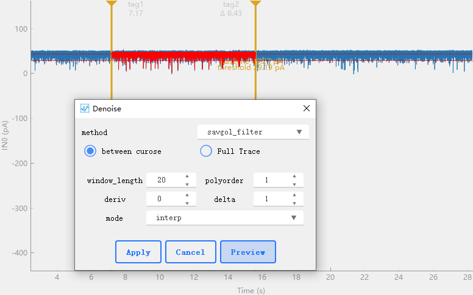

1. 简介
PyNanoLab是一个使用PySide6框架结合Python的科学计算生态构建的用户界面(GUI)软件。它旨在提供一个跨平台、现代化和易于操作的界面，用于数据的分析处理和数据的可视化。
PyNanoLab 主要有以下几个主要特性:
-
跨平台支持： PyNanoLab可以在多个操作系统上运行，包括Windows、Mac和Linux。
-
现代化界面： 采用现代化的用户界面元素和交互方式，以提供良好的用户体验。
-
数据管理：PyNanoLab提供了统一的数据管理功能，支持常见的数据格式，导入的数据，分析的结果和绘制的图表可以保存在统一的项目文件中，用以重复使用。
-
数据分析： 软件内置了数据分析工具，包括数据可视化、统计分析和等功能，帮助用户探索和分析实验数据。
-
拓展工具箱: ：PyNanoLab提供了多种数据分析工具箱，添加扩展功能和插件，以满足特定的分析要求。
2. 安装
具体请参照在线教程：https://pynanolab.com/html/install
In the version 3.X, binary installer (*.exe) is not provided anymore owing to the complex workflow and lost feature and performance.
We recommend you use the pip install to obtain all the advanced features.
System Required
Firstly, you should have already installed the python or conda virtual environment in your system.
Miniconda is recommended. And you should add the conda to your system environment variable.
In windows, you also need to install a terminal. git-windows or windows-terminal is recommended.
Create a new python virtual environment
PyNanoLab depend on th PySide6 to create its GUI. And its not compatible with the other PyQt package. So we highly recommend to install pynanolab to a new python virtual environment.
use following command in a terminal:
conda create -n pnl python=3.11.3
source activate
conda activate pnl # activate the pnl environment.
conda install numpy # optional, install the numpy-MKL to speed up the software.
conda install hdbscan -c conda-forge
So, you have create a new python virtual environment and activated it.
The name is pnl and you can change the name to anything you want, and the python version is specified to 3.11.3.
Install the pynanolab by pip
After version 3.x, we provide a pip package.
pip install pynanolab
Use the above command, the pynanolab will be installed automaticly. And a entry fille will be created in the Scripts folder of the "pnl" virtual environment. In windows is named "pynanolab.exe" and "pynanolab" in Linux and MacOSX.
Then, you can directily conduct the following command to open it in a terminal with pnl virtual environment activated.
pynanolab
If you want to create a shortcut or a desktop entry. Use the following command:
pnl-shortcut
Upgrade pynanolab
If you use the pip installtion. You can upgrade the packages manually using the following command:
pip install --upgrade pynanolab
For binary installation, such as the .exe in windows. If we don't provide a new exe file in the sourceforge. You can manually download the the *.whl file for your system from pypi or github. Then, you can unzip the *.whl file use any compressed software (such as 7zip in Windows or unzip in Linux). And you will find the pynanolab folder in the archive. Delete the same "pynanolab" folder in the PATH you installing the PyNanoLab and replace with the new package in the archive.
2.1 系统要求
为了在计算机上安装和运行PyNanoLab软件，您的系统需要满足以下最低要求
操作系统：任意带有GUI界面的64位 Windows、macOS和Linux发行版。
内存：建议至少8GB RAM。
PyNanoLab本身对系统的性能没有太大要求，但是当处理大量数据，特别是对高采样率的数据进行可视化的过程中需要消耗大量的内存和CPU资源。
PyNanoLab 使用了众多科学计算库和GUI库，因此可能会和当前系统python的模块冲突或者出现兼容性问题，因此建议在一个独立的虚拟环境中安装。首先，您应该已经在系统中安装了Python或Conda虚拟环境，建议使用Miniconda，并将Conda添加到系统环境变量中。在Windows系统中，您还需要安装一个终端程序。建议使用git-windows或Windows Terminal。
2.2 软件安装
-
首先，为PyNanoLab 创建独立的虚拟环境，在terminal中执行以下命令：
conda create -n pnl python=3.11.3 source activate conda activate pnl # activate the pnl environment. conda install numpy在上述命令中，我们使用conda 创建了一个名为 pnl 的python虚拟环境，其中指定python版本为3.11.3。接着激活 pnl 环境，并使用conda在此环境中安装mkl版本的numpy。
-
然后，使用pip 工具直接安装pynanolab和相关依赖
pip install --upgrade pynanolab # 更新或安装最新版本
至此，pynanolab 已安装在 pnl 虚拟环境中，在激活pnl的终端中直接执行pynanolab命令即可打开软件 (首次打开可能需要稍长的时间)。此外，也可以使用命令pnl-shortcut为软件创建桌面快捷方式。
3. 基础操作
3.1 界面导览
PyNanoLab 的界面主要包括菜单栏、工具栏、项目管理器和多文档管理器。
3.1.1 项目管理器
项目管理器用于管理软件的所有文件和对象，包含一个树浏览器和列表浏览器。PyNanoLab的项目文件以文件夹形式的字典进行管理，一个项目可以创建多个文件夹，其中每一个文件夹分别包含固定的Data、Table和Figure三个子文件夹。
- Data文件夹： 管理采样数据，数据形式为多通道多组的采样数据，目前支持 Axon的.abf文件、LabVIEW的 .tdms 文件、和 LightField 的.spe光谱文件。
- Table文件夹： 管理所有生成的和外部导入的表格文件，包括 文本文件(.txt)、.csv、.xlsx、.mat、.npy文件等。
- Figure文件夹： 管理所有的绘图对象。
在选中树浏览器的子文件夹后，列表浏览器将会列出存储在该文件夹下的所有条目，鼠标双击条目即可打开对应的窗口。
3.1.2 多窗口管理器
PyNanoLab 所有打开的窗口都显示在多文档管理器中，因此可以支持同时打开多个数据。数据的操作和处理也在对应的窗口中进行。菜单栏的、和可以用于整理多文档管理器的窗口。右键菜单中列出了常用的管理命令，主要包括文件的导入、导出和删除。双击条目的名称可以自定义修改当前条目的名字。
在PyNanoLab中，Data文件夹和Table文件夹中所有的条目打开的窗口仅仅是数据的一个视图，因此关闭窗口并不会删除任何数据，关闭此类窗口是没有关闭警告的。Figure文件夹中的窗口即包含图像数据本身，因此关闭图形窗口将会删除对应的绘图对象。
3.2 项目的管理
PyNanoLab项目文件的基本结构如下：
-
项目文件（*.pnl）：PyNanoLab的项目文件是一个ZIP格式的压缩包，其中包含整个项目的内容。该文件作为项目的主要入口点，可以存储和管理项目的所有数据和配置信息。
-
主文件夹（*.pnlfd）：在项目文件中，每个主文件夹都以ZIP格式存储为一个独立的子文件。主文件夹对应树浏览器中的顶层文件夹，它们包含了项目的不同部分和数据。
-
数据文件夹（*.pnldat）：数据文件夹是项目中用于存储数据的子文件夹之一。它使用PyTables将数据存储为HDF5格式，以实现高效的数据存储和访问。数据文件夹可以包含多个数据文件，用于存储不同类型或不同来源的数据。
-
表格文件夹（*.pnltbz）：表格文件夹是项目中用于存储表格数据的子文件夹。它使用Pandas的HDFStore接口将表格数据存储为HDF5格式。表格文件夹可以包含多个表格文件，用于存储不同的表格数据和结构化信息。
-
图形文件夹（*.pnlfigz）：图形文件夹是项目中用于存储图形数据的子文件夹之一。类似于数据文件夹，它也使用PyTables将图形数据存储为HDF5格式。图形文件夹可以包含多个图形文件，用于存储不同的图形和可视化结果。
-
-
通过这样的文件结构，PyNanoLab项目文件能够将项目的各个组成部分进行组织和存储，实现数据的高效管理和重用。用户可以方便地导入和导出不同的子文件夹，以灵活地处理和共享项目数据。
上述三个子文件也可以从压缩包中解压出来单独的导入到PyNanoLab中，软件也支持将每个子文件夹独立的导出。
# 一个PyNanoLab项目文件的基本结构
model.pnl
├──Folder1.pnlfd
| ├── Data.pnldat
│ ├── Table.pnltbz
│ ├── Figure.pnlfigz
├──Folder2.pnlfd
| ├── Data.pnldat
│ ├── Table.pnltbz
│ ├── Figure.pnlfigz
虽然，PyNanoLab的项目文件存储没有上限，但仍然不建议在一个项目文件中存储大量的数据，特别是包含特别多的原始数据，从而增加存储和打开的时间以及出现错误的概率。建议单个文件不超过4GB的大小，以免在某些文件系统中遇到未知的问题。
当打开项目文件出错的时候，可是直接使用解压缩软件（例如:7z）将 *.pnl内的文件解压出来，单独的导入到软件中，或者直接编写程序查看和导出数据。
4. Data模块
PyNanoLab根据导入的数据类型将数据放入不同的文件夹进行处理，Data文件夹主要处理采集的各种非表格结构的数据。通过工具栏的 按钮或者直接拖曳文件到树浏览器即可打开文件。
导入数据文件后，双击该文件的条目即可创建数据的视图窗口，在PyNanoLab中，采样数据的可视化使用Pyqtgraph框架构建,可以实现数据的高速显示。
4.1 采样数据的处理
在PyNanoLab中，软件的文件IO接口会自动从文件读取所需的采样率、滤波、单位、名称等信息，ABF等电生理的采样数据由sampledatawidget进行处理，如上图所示，主要包括：
-
数据浏览器
在左侧的树浏览器中，列出了该数据文件所有的sweeps和在每一个sweep下的通道，鼠标选中对应通道，即可在绘图区域显示该通道的数据。 -
数据可视化
数据显示区域使用Pyqtgraph的lineplot绘制，图形区域支持3点鼠标操作。在图形上点击右键保持，拖曳即可实现图形的缩放和位移。在绘图区，分别添加了两个纵向的cursor，用于辅助选择图形中的数据。 -
工具栏1
主要包含所有的用于原始数据操作和提取的工具:-
![reset]() : 重置数据，窗口保留了一份原始数据的备份。可以点击此按钮将数据重置为初始状态。
: 重置数据，窗口保留了一份原始数据的备份。可以点击此按钮将数据重置为初始状态。 -
![PSD]() : 计算并绘制光标区间内数据的功率谱密度。
: 计算并绘制光标区间内数据的功率谱密度。 -
![to Table]() : 导出光标区间内的数据到表格。
: 导出光标区间内的数据到表格。 -
![ToMatFile]() : 导出光标区间内数据到MATLAB的.mat文件。
: 导出光标区间内数据到MATLAB的.mat文件。 -
![Detrend]() : 将数据中上升或者下降的趋势消除掉。
: 将数据中上升或者下降的趋势消除掉。点击该按钮后，图形中将出现一条趋势线，通过调整两端的锚点可以调整趋势线的斜率；在趋势线上双击，可以添加新的锚点。设置完成后，点击确认按钮即可。
-
 : 数据翻转，取数据的相反数。
: 数据翻转，取数据的相反数。 -
![Histogram]() : 计算并绘制光标区间内数据的Histogram。
: 计算并绘制光标区间内数据的Histogram。 -
![dropdate]() : 删除光标区间内的数据，可以用以去除数据中异常的区间，方便后续信号提取。
: 删除光标区间内的数据，可以用以去除数据中异常的区间，方便后续信号提取。 -
![concat]() : 将多个sweeps的数据合并到一个sweeps。
: 将多个sweeps的数据合并到一个sweeps。 -
![extend Cursors]() : 将光标放置到最大位置，选中所有数据。
: 将光标放置到最大位置，选中所有数据。 -
![Bring Cursors]() : 将所有光标放放置在可视区域内。
: 将所有光标放放置在可视区域内。 -
![Bring Cursors1]() : 将光标1放置在可视区域内。
: 将光标1放置在可视区域内。 -
![Bring Cursors2]() : 将光标2放置在可视区域内。
: 将光标2放置在可视区域内。 -
![autoscale]() : 自动缩放图形。
: 自动缩放图形。
-
-
工具栏2
主要包含用于数据处理的工具:-
![Nanopore]() : 提取纳米孔信号，在3.0版本，我们推荐使用纳米孔工具箱进行纳米孔信号的处理，具体使用方法请参照章节7.1。
: 提取纳米孔信号，在3.0版本，我们推荐使用纳米孔工具箱进行纳米孔信号的处理，具体使用方法请参照章节7.1。 -
![denoise]() : 数据降噪。
: 数据降噪。

该工具包含了几种对数据降噪的算法。如图所示，在method里选择所要使用的算法，并在下方设置相应的参数。between curose 表示只处理光标之间的数据，Full Trace 表示处理整个数据。设置完成后可以点击 预览效果，确认无误后点击作用到原始数据上。 -
![Filter]() : 滤波器工具
: 滤波器工具
包含butter和bessl型的低通、高通、带通和带阻滤波器。使用scipy.signal 完成，具体设置参数可参考:scipy.signal.bessel 和scipy.signal.butter。 -
![Baseline]() : 基线拟合
: 基线拟合
用以对数据进行基线矫正，获取数据的基线或者去除基线将数据平滑，使用pybaselines包完成计算。其中segmentation表示是否对数据进行分割，采样数据通常数据量比较大，直接对所有信号寻找基线会占用大量的内存或者使得系统崩溃，在这里我们可以将数据分组进行计算，该值设为0即表示不进行分组。对于每一种算法的参数设置，请参考pybaselines的算法文档。 -
: 数据计算
使用表达式对数据进行计算，支持numexpr的表达式格式，也可以通过下拉列表选择所有支持的操作和函数。local var 列出了代表数据的变量，Operator列出了支持的运算操作，Functions列出了所有支持的函数的符号。例如：输入：sin(IN0+100),表示对第一个通道的数据+100并计算正弦值后赋值给当前预览的通道。 -
![eval]() : 时频谱，一种计算时频谱的算法，请参考文献(10.1038/s41467-020-20539-9)。
: 时频谱，一种计算时频谱的算法，请参考文献(10.1038/s41467-020-20539-9)。 -
![eval]() : 纳米孔工具箱，点击该按钮，位于光标间的数据将被转移至纳米孔工具箱进行后续处理。
: 纳米孔工具箱，点击该按钮，位于光标间的数据将被转移至纳米孔工具箱进行后续处理。
-
4.2 光谱数据的处理
to be continued ...
5. Table模块
PyNanoLab构建了类似于excel和OriginLab的表格工具。使用pandas管理后台数据和运算，使用QTableView进行数据的展示和交互。通过可以直接导入外部的数据到Table文件夹中。对于文本文件，我们构建了一个数据导入向导帮助数据的加载。此外，也支持 numpy 的 npy、npz和matlab文件的导入。
PyNanoLab的表格支持多个工作簿，每一个工作簿包含一个数据的表格和一个对应表头的信息表格(类似于OriginLab)，主要记录数据的"Name"、"Unit"、"Type"信号。每一个表格包含一个日志文件，可以自动或者手动记录文件的一些信息，支持markdown格式，日志的入口位于表格窗口的右上角。
PyNanoLab的表格窗口记录了过去的10步操作，因此最多可以执行10步撤销。在窗口关闭时，历史记录也将消失，因此关闭窗口虽然不会删除数据但会丢失数据的历史记录。但过多的历史记录也会消耗一定的系统资源，需要在此之间平衡。
PyNanoLab的表格大部分操作简单明了，在此主要介绍几种特色的功能。
-
数据的导出
在列表浏览器中右键即可找到文件导出的入口，同时也可以选择复选框选中多个文件同时导出。 -
设置绘图标签

在数据可视化中，我们需要指定数据的X-Y等标签。在信息表中选中列，右键选择-> 设置绘图标签为,选择对应符号，然后将会显示在表头上。 -
设置数据类型
同上述操作类似，用于修改每一列数据的数据类型。 -
数据筛选
PyNanoLab具有强大且方便的筛选功能，支持numexpr和pandas的表达式格式，筛选的结果直接生成在新的表格中。以上图为例,表达式A>15 and B>0.2; 其中A和B是每一列数据的唯一标识符，可以支持多个布尔运算同时筛选。
EXAMPLES:A > 15 and (B > 0.2 or B < 0) sin(A)>0.5 A+B>12 and (B < 0) -
查找替换
可以查找替换满足条件的数字和字符串，支持正则表达式。参考链接
如上图所示：将A和B列中大于15的数字替换为10。 -
复制
PyNanoLab中为了增强性能，表格的数据进行分页显示。因此直接在表格中全选复制只能最多获取1000行的数据，因此如果需要复制整个表格的数据到excel等其他软件，需要使用工具栏的复制按钮，复制选中列的所有数据。 -
分列
只针对字符串数据类型，根据匹配的符号将一列数据分成多列，类似于Excel的分列功能。 -
计算
PyNanoLab支持直接使用表达式对表格数据进行计算，类似于EXCEL的公式功能。软件包含两种计算方法: 一种如上图所示在计算对话框中输入表达式,以
H=A+sin(B)为例，表示将右边计算的结果赋值给名为H的列，如果H列在表格中不存在，则创建新的列；如果存在，则修改对应列的值。另一种是在表头的Func单元格中直接输入等号右边的表达式，默认将结果赋值给当前列。
-
工作簿的拼接和合并
PyNanoLab支持对一个表格中的工作簿进行合并和拼接。对于不同表格的工作簿，可以使用鼠标拖曳将工作簿从一个表格复制到另一个表格中。工作簿拼接使用
pandas.concat,即沿着某一个轴将两个表格合并，主要用于为数据添加新的行和列。工作簿合并使用
pandas.merge,即用一个新的表格更新旧表格的数据，类似于数据库的更新。请参考Pandas userguide,选择适合自己的操作。
6. 数据可视化
PyNanoLab通过matplotlib绘图库构建了一套完整的绘图工具，结合pandas构建的表格工具，实现了matplotlib绘图库的gui交互式绘图，可以通过gui界面实现对图形任意参数的设置、保存和重载，无需任何代码。目前已实现曲线图、散点图、柱状图、分布图、地形图等多种图形的数据可视化。
matplotlib 的绘图分为三个层次：
-
Figure：
Figure 表示一张画布上的绘图区域，一张画布可以有一个或多个，相同或者不同类型的坐标系，是所有绘图元素的顶级容器。一般通过plt.Figure()创建一张图片。 -
Axes:
Axes表示一张图片上的坐标系系统，在一张画布上可以同时有多个坐标系，每个坐标系包含x、y轴，每一个坐标轴上又有对应的ticks，tickslable和坐标轴标签。PyNanoLab 的所有2D图使用同一类型的坐标系系统，可以控制所有坐标轴属性的设置。 -
Artist：
Artist表示坐标系上具体绘制的对象，例如曲线、散点等，使用不同的Artist最终就可以绘制不同类型的数据图。
PyNanoLab通过重新组织matplotlib的绘图对象，为每一种artists设计了独立的gui参数设置工具，实现了交互式绘图，无需复杂的Coding过程。
PyNanoLab绘图只需要在表格中根据需要将需要绘图的数据列设置对应的绘图标签，然后选中数据选择对应图形的按钮即可。
如上图所示：PyNanoLab的图像窗口包括工具栏、对象浏览器和绘图区域。对象浏览器列出了图像上所有元素的结构，每一个图形可以有多个坐标系，每一个坐标系下可以有多个图形对象(artist)。
-
图形的合并
PyNanoLab 支持通过拖曳将其他图像一个坐标系下的绘图对象放置到另一个坐标系下，通过该方法可以实现图形的合并。

-
自定义布局
此外，自定义绘图方法，可以绘制复杂的坐标系布局，然后再将已经绘制好的图形对象放置到对应的坐标系,构建复杂的图形。点击绘图菜单下的自定义绘图,之后会弹出一个向导对话框。
第一步: 设置图形的大小和坐标系网格。axes grid 用来帮助在图形上划分网格，然后方便后续在图形上放置坐标系。一个坐标系可以占据多个单元格，因此可以使用此方法设置坐标系的比例的大小。
第二步: 根据第一步设置的网格生成对应的表格，然后选中想要创建一个坐标系的单元格并点击Add Axes 按钮，即可将该区域标记为一个坐标系。
第三步: 为每一个坐标系设置对应的类型，默认为2D图。
第四步: 预览创建的坐标系，如果不符合需求可以返回上一步重新设置。
最后，我们将其他图中绘制好的Artist拖曳到对应的坐标系，即可生成一张复杂的图形。
整个过程如图所示：
更多图形的绘制方法，请参考用PyNanoLab进行数据可视化
7. 工具箱
7.1 纳米孔工具箱
纳米孔工具箱主要用于纳米孔信号的提取和分析。其主界面包括：工具栏、信号列表、绘图区域和结果表格。纳米孔工具箱的原始数据可以直接从主界面的Data widget将光标区间的数据导入，然后存储成一个独立的 *.pnlmd 文件。该文件记录了所有的原始数据和分析结果，内部存储结构为 pytables的HDF5文件，可以方便的重新导入到工具箱进行再次分析。独立的纳米孔工具箱可以实现更复杂的信号分析和批处理过程，并方便的集成新的功能。其主要功能如下：
-
 导入模型: 导入存储的 *.pnlmd 文件.
导入模型: 导入存储的 *.pnlmd 文件. -
![eval]() 导出数据: 导出数据到 *.pnlmd 文件.
导出数据: 导出数据到 *.pnlmd 文件. -
数据导出: 导出数据到文件或者主界面。包含两个功能：一个是导出信号分析结果到文件或者主界面；一个是导出原始数据
导出原始数据可以将信号的原始数据、拟合的信号导出为一个或多个文件，方便使用自定义的脚本和软件进行后续分析。 -
![eval]() 绘制原始数据: 可视化原始信号，信号自动提取时需要将原始信号显示出来并设置参数。
绘制原始数据: 可视化原始信号，信号自动提取时需要将原始信号显示出来并设置参数。 -
![eval]() 绘制拟合数据: 将原始信号和拟合的结果一起绘制，可以方便的整体检查信号的分析质量。
绘制拟合数据: 将原始信号和拟合的结果一起绘制，可以方便的整体检查信号的分析质量。 -
自动缩放图像
-
纳米孔信号自动分析：纳米孔自动分析的入口。
如上图所示，其中preprocessing 部分是在信号分析是对数据进行一些降噪的预处理。在自动分析之前。需要手动设置一些参数帮助程序寻找并分析信号，具体解释如下：- Model: 选择信号分析方法。每一种方法的结果请参照后续的结果图。
- Baseline: 设置信号的基线，即开口电流。可以通过拖动绘图区的baseline线选取。
- Threhold: 设置信号阈值，即大于或小于此值的信号才进行分析。
- Direction: 信号位于基线上方还是下方。Tips：在纳米孔中，我们通常用阻断信号或者增强信号描述一个信号的行为。在这里我们使用Direction是因为，在负电压的阻断信号中，信号的数值(eg. -100)是大于基线的数值的(eg. -200)，因此在基于数值分析的信号处理中使用阻断和增强信号描述会带来误解。 在后续版本中，我们将去除该选项，使用设置的基线和阈值自动判断信号方向。
- fluctuation: 信号的噪音，该值是寻找信号的重要参数，我们在超过该阈值的台阶波动中寻找信号。设置为：基线噪音的上下波动范围，更准确的说是 基线上极值点和下极值点差值的平均值。
- fluctuation2: 同上述参数。用于在多台阶分析中，在信号内部寻找多台阶时使用该值，避免基线和信号的噪音差异过大带来的误差。设为0即表示使用fluctuation。
- ignore time less：在多台阶分析中，忽略持续时间小于该值的台阶。
- ClusterNum： 在multistepsKmeans方法中，设置信号预期最多的台阶数目。
- Kernel Size：Kmeans 算法的kernel数目。
- Sigma：extremejump算法使用的参数，该算法只需要这一个参数，在超过该倍数的基线噪音的波动中寻找信号，无需要求基线平整。
- BaseLineNum：faradayStep 算法的参数：表示使用多少数据点计算基线。
- StopNum：faradayStep 算法的参数：表示使用多少数据点判断信号结束。
- StopDiff：faradayStep 算法的参数：表示使用多判断信号结束的误差。
在上述算法中 singleStepOriginal, singleStepReduced, singleStepAdept2 用于单台阶信号处理。multistepspnl, multiStepkmeans，IDMS 用于多台阶信号分析。
singleStepAdept2 算法来源于MOSAIC，我们使用了更好的方式进行算法实现。其他所有算法为PyNanoLab自主开发。在IDMS方法中，需要对单个信号进行多台阶处理。是用该算法需预先使用 cutignal 算法将信号进行分割。
- 信号的预览
在纳米孔工具箱中，分析好的信号有两种预览方法，一种是点击工具栏的绘制拟合信号，全局预览所有分析的结果。此外，可以点击信号列表一个个预览单个信号。 - 信号的修改
在纳米孔工具箱中，支持对分析完成的信号进行二次的手动修改。点击绘图区域下方的View mode 按钮，即可将软件在预览模式和编辑模式之间切换。在编辑模式中，点击每一个信号，绘图将会显示出表示信号台阶的线，通过拖动每一条线即可实时修改信号的分析结果。也可以点击Reset, 删除分析结果，使用手动模式分析。 - 信号的手动分析
通过双击图形中的数据点标记信号台阶的起始和结束位置，点击Confirm按钮，即可重新计算结果。
-
![eval]() 信号的手动添加：手动添加信号到信号列表。用于处理信号噪音波动大，基线不平，无法自动提取信号的数据。
信号的手动添加：手动添加信号到信号列表。用于处理信号噪音波动大，基线不平，无法自动提取信号的数据。
-
重置信号：将所有信号重置为未分析状态。
-
![eval]() 删除信号：删除信号列表里的所有信号。
删除信号：删除信号列表里的所有信号。 -
![eval]() 统计图：自动生成纳米孔结果的统计图。
统计图：自动生成纳米孔结果的统计图。 -
批处理计算每个信号的PSD
-
 批处理计算每个信号的stft谱
批处理计算每个信号的stft谱 -
批处理计算每个信号的时频谱，使用superlets算法